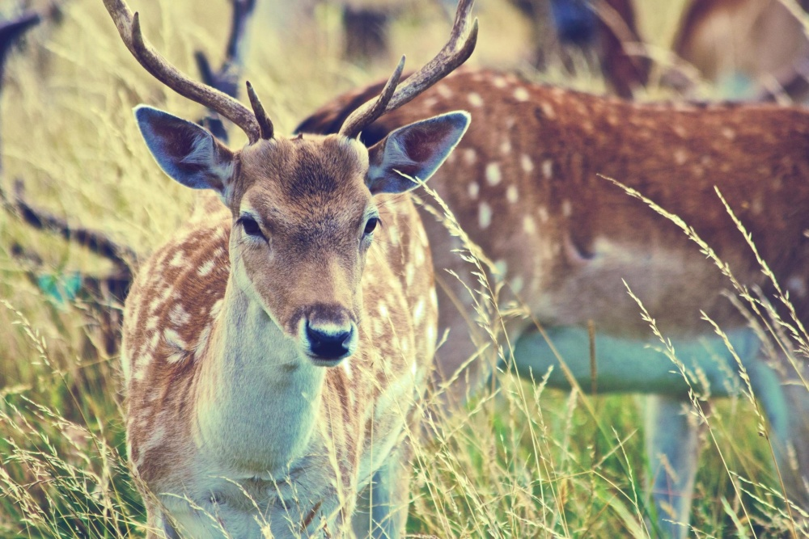
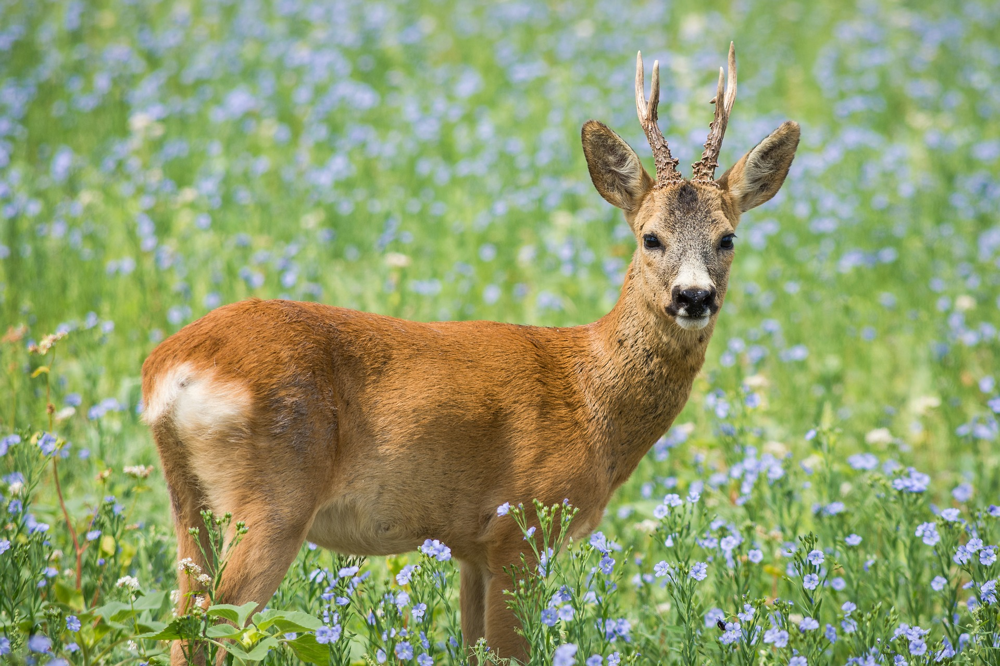
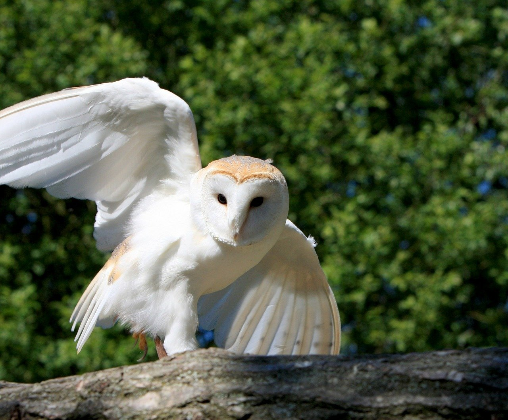
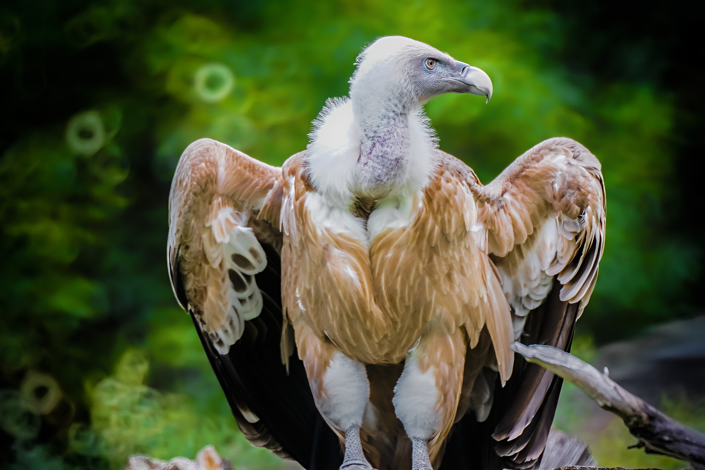
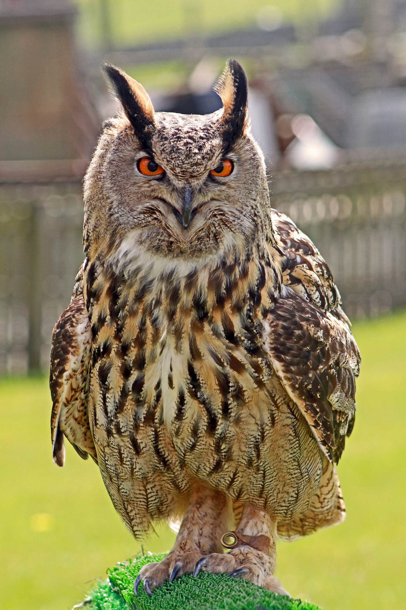

Fauna silvestre en Bizkaia
Principal
Fauna silvestre
Video Parque natural de Armañon
Video Parque natural de Urkiola
Video Parque natural de Gorbeia
Principales especies de aves y mamíferos
Mamiferos

Ciervo

Corzo
Jabalí
Aves

Lechuza

Buitre leonado

Buho real